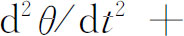
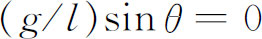
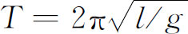
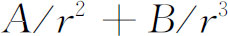
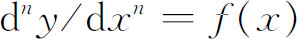

1．主题
数学家谋求用微积分解决越来越多的物理问题，他们很快发现不得不对付一类新的问题。他们做的比他们有意识去探求的还多。比较简单的问题引导到可以用初等函数计算的积分，而某些比较困难的问题则引出不能如此表达的积分，如椭圆积分就是实例（第19章第4节）。这两类问题都属于微积分范围。然而，解决更为复杂的问题，就需要专门的技术，这样，微分方程这门学科就应时兴起了。
有几类物理问题促进了微分方程的研究，其中一类就是现在通常称为弹性理论这一领域中的问题。一个物体如果在外力作用下产生变形，而当外力移去时就恢复原状，我们就说它是弹性的。最有实际意义的问题是考虑垂直梁和水平梁在外加载荷下所成的形状。中世纪宏伟教堂的建筑师们用经验处理的这些问题，到17世纪由伽利略、马略特（Edme Mariotte，1620？—1684）、胡克（Robert Hooke，1635—1703）和雷恩（Christopher Wren）这样一些人作了数学的探讨。梁的性态是伽利略在《关于两门新科学的对话》中所研究的两门科学之一。胡克对弹簧的研究引导他发现了定律：一个被伸长或被缩短的弹簧的恢复力，正比于它伸长或缩短的相对长度。18世纪的人们用更多的数学武装了头脑，他们关于弹性的工作是从钻研这样一些问题开始的，如：一根悬挂在两固定点的非弹性柔软细绳所取的形状；一根悬挂在一固定点并使之振动的弦或链的形状；一根固定在两端的弹性振动弦所取的形状；一根两端固定的杆子在外加载荷下的形状，或在振动时的形状。
摆的问题不断激发着数学家的兴趣。圆周摆的精确微分方程


向研究工作挑战了，甚至用θ代替sinθ所得到的近似方程在分析上也是未曾研究过的。而且圆周摆的周期与运动的振幅不是严格无关的，这样就要求寻找一条曲线，使得摆锤沿这条曲线摆动的周期与振幅严格无关。惠更斯引进了摆线，在几何上解决了这个问题；但是分析的解还没有形成。摆的问题密切联系着18世纪的另外两项比较重要的研究：地球的形状和引力的平方反比定律的验证。因为摆的近似周期

依赖于重力加速度g，所以用摆的周期可以测量地球表面不同地点的重力。只要沿着一条经线，依次测量出相当于纬度改变1°的长度，再利用某一理论和相应的g值，就可确定地球的形状。事实上，牛顿根据观察到的摆周期随地球表面不同地点的变化，推断出地球在赤道上是鼓起的。在牛顿用理论推断出地球的赤道半径比极半径超过1/230（这个值的百分之三十是大过头的）之后，欧洲的科学家们急欲加以核实。方法之一是测量赤道附近和极点附近纬度1°所跨经线的长度。如果地球是扁的，那么后一长度要比前一长度长一些。
卡西尼（Jacques Cassini，1677—1756）及其家庭中的一些成员作了这样的测量，而且在1720年给出了相反的结果。他们发现两极之间的直径比赤道的直径大了1/95。为了澄清这个问题，法国科学院在1730年派遣了两个探险队，一队在数学家莫佩尔蒂（Pierre-Louis Morean de Maupertuis）的领导下去拉普兰（Lapland），另一队去秘鲁。莫佩尔蒂分遣队里有一名是数学家克莱罗。他们的测量证实了地球在两极是扁平的；伏尔泰欢呼莫佩尔蒂是“两极和卡西尼们的压平者”。其实，莫佩尔蒂的值是1/178，比不上牛顿的精确。地球的形状问题仍旧是一个重大的课题，而且在一个很长的时期内没有弄清楚，这形状是否是一个扁的球面，或一个扁长的球面，或一般的椭球面，或别的什么旋转面。
如果已经知道了地球的形状，那么与此有关的问题，即引力定律的验证，就可进行了。知道了地球的形状，就能确定把一物体保持在旋转着的地球表面上或表面附近所需的向心力。于是，在知道了地球表面上的重力加速度g之后，我们就可查对由向心加速度和g所提供的全部重力是否确实符合平方反比定律。有些人怀疑这个定律，克莱罗就是其中一个，他有一个时期曾经相信引力的形式应该是F＝

。引力定律和地球的形状，这两个问题有着更深刻的内在联系，这是因为如果把地球看成旋转的平衡流体，那么平衡的条件就牵涉到流体质点之间的相互吸引力。主导着这一世纪的物理研究领域是天文学。牛顿已经解决了所谓的二体问题，即在太阳的引力作用下，一个单一的行星的运动，考虑时把两个物体都理想化成质点。他也曾经提出了一些办法去研究比较重要的三体问题：月球在太阳和地球引力作用下的性态。然而，这正是研究行星及其卫星在太阳引力和所有别的星体的相互吸引下的运动的开端。牛顿在《原理》中的工作，虽然实际上构造了微分方程的解，但是还有待于翻译成分析的形式。而这个工作是在18世纪逐步完成的。那个优秀的法国数学家和物理学家瓦里尼翁在进行把动力学从几何学的束缚下解放出来的探索中，顺便开始了这个工作。牛顿也确实用过分析的形式解决了某些微分方程，例如他在1671年的《流数法》中（第17章第3节）和1676年的《专论》（Tractatus）中，都讲到了微分方程

的解在x的一个n-1次多项式的范围内是任意的。在《原理》第三版命题34的注解中，他只讲了什么样形状的旋转曲面在流体中运动时受到的阻力最小；而在1694年给大卫·格雷戈里的一封信中，他说明了他是怎样得到他的结果的，并且在说明中用了微分方程。在天文学的问题中，月球的运动受到最大的注意，这是由于确定船只在大海中的经度的一般方法（第16章第4节），同17世纪所介绍的别的方法一样，都有赖于知道月球每时每刻相对于一标准位置（它在该世纪的后期定为英国的格林尼治）的方位。为了决定误差不超过1′的格林尼治时间，就需要知道误差不超过角度15″的月球的方位；甚至这样的误差也可能导致船只的定位有30千米的偏差。但是在牛顿的时候，通用的月球位置表远没有达到这样的精度。对月球的运动理论产生兴趣的另一个原因是：它可以用来预报日蚀和月蚀，这反过来对整个天文学理论是一种检验。
常微分方程的主题产生于刚才谈到的一些问题。数学发展了，偏微分方程的课题也引导出常微分方程进一步的工作。现在叫做微分几何与变分法的这两个分支就是这样。在这一章内，我们将讨论那些直接引导到常微分方程（即只包含一个自变量的导数的方程）的基本的早期著作。